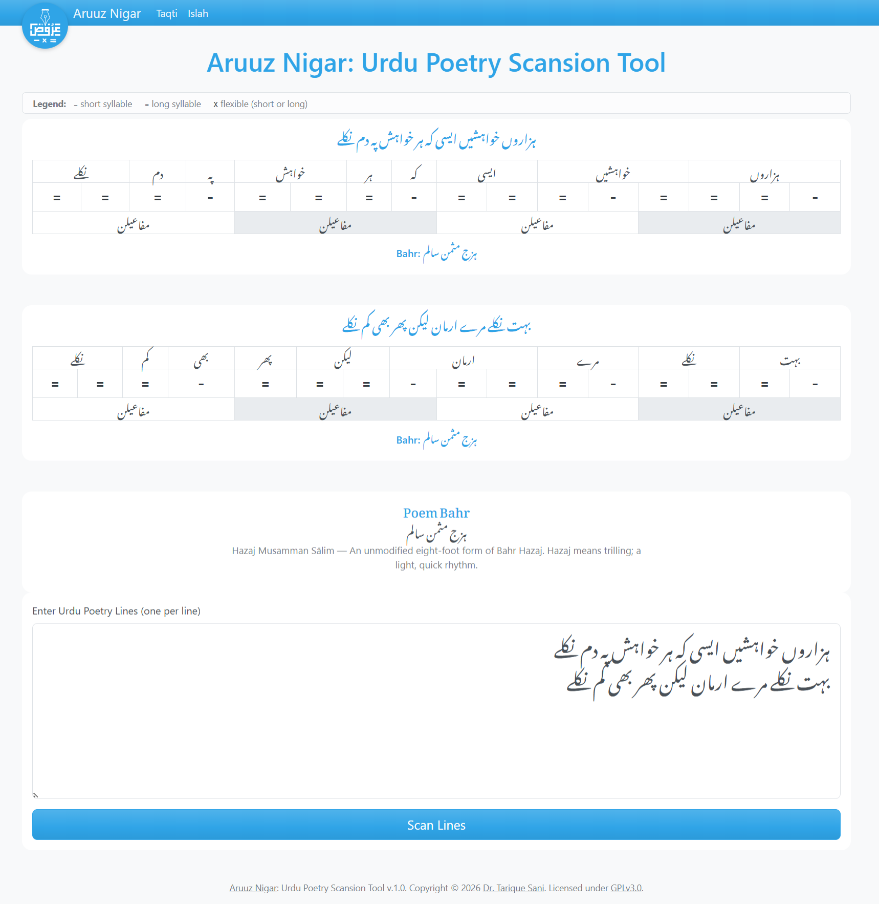

Aruuz Nigar
Aruuz Nigar
Aruuz Nigar - Urdu Poetry Scansion Tool
What is Aruuz Nigar?
Aruuz Nigar is an Urdu poetry tool that helps poets and readers work with arūz and ghazal rhyme. For meter, it infers the taqti of individual lines and matches them against known bahrs. For ghazals, it can check radeef and kafiya (strict Urdu-script radeef detection, kafiya consistency against the matla, plus phonetic hints where applicable). It also ships with a basic kafiya dictionary: look up an Urdu word and browse rhyming words grouped by match quality. An MCP server exposes the same scansion and analysis capabilities to compatible AI assistants and editors.
The project has two parts: Aruuz, a reusable Python library (scansion, meter matching, and rhyme utilities), and Nigar, a Flask-based web frontend that exposes scansion, islah-style radeef/kafiya feedback, and the dictionary UI. Here is how it looks...

Why create Aruuz Nigar?
Aruuz Nigar was created for my understanding of Urdu arūz. While tools such as Rekhta's taqti and Aruuz.com are available, Rekhta is proprietary and the publicly available Aruuz.com codebase is more than a decade old, written in C#. Aruuz Nigar aims to provide a modern, open source, developer friendly alternative with a clear semantic core that can run on both desktops and servers.
How to use Aruuz Nigar?
Download for Windows end-users
Download the executable from HERE. Save and double-click aruuznigar.exe. It starts the web UI and the MCP server together, then opens your browser. If it does not, open http://127.0.0.1:5000 manually. No install, setup, or Python needed.
Note: The executable runs locally: Flask on port 5000 (web UI and API) and the MCP server on port 8765 (SSE at http://127.0.0.1:8765/sse). All processing stays on your machine; no external network access is required for normal use. To connect a compatible AI assistant, point it at that MCP endpoint (some releases also include a .mcpb bundle for tools such as Claude Desktop).
For everyone else
Installation: Clone the repository:
git clone https://github.com/tariquesani/aruuz-nigar.git
cd aruuz-nigar/
Setup Virtual Environment
Windows:
python -m venv venv
venv\Scripts\activate
pip install --upgrade pip
pip install -e .
pip install -r requirements.txt
Linux/Mac:
python3 -m venv venv
source venv/bin/activate
pip install --upgrade pip
pip install -e .
pip install -r requirements.txt
Run Aruuz Nigar (web + MCP):
python launcher.py
http://127.0.0.1:5000 and the MCP server at http://127.0.0.1:8765/sse (same behavior as the Windows executable).
For development you can run services separately: python app.py for the web UI only, and python mcp/aruuznigar.py for MCP after Flask is up. See mcp/README.md for the FastMCP dev inspector workflow.
Docker (optional):
docker compose up -d
http://<host>:5000, MCP: http://<host>:8765/sse
For developers, use as a Python library (Aruuz):
from aruuz.scansion import Scansion
from aruuz.models import Lines
scanner = Scansion()
line = Lines("نقش فریادی ہے کس کی شوخیِ تحریر کا")
scanner.add_line(line)
results = scanner.scan_lines()
Project Structure
aruuz/— Core Python library (scansion, meters, rhyme, trees)scansion/— Scansion engine (core.py, word analysis/assignment, length scanners, meter matching, prosodic rules, scoring,explanation_builder.py)tree/— Pattern matching (code_tree.py,pattern_tree.py,state_machine.py)database/— Word lookup and metadata (word_lookup.py,word_metadata.json,word_vazn_metadata.json;aruuz_nigar.dbandkafiya_index.pklare built or supplied at runtime)rhyme/— Ghazal rhyme (radeef.py,kafiya.py,kafiya_dict.py,text_utils.py)utils/— Text/diacritics, logging, alignment (text.py,araab.py,aligner.py,meter_align.py,meter_summaries.py,logging_config.py)meters.py,models.py— Bahr definitions and data modelsapp.py— Flask application (Nigar web UI and/apiroutes)launcher.py— Starts Flask + MCP together (used byaruuznigar.exeand recommended for local runs)serve_flask_mcp.py— Alternate subprocess launcher for Flask + MCPmcp/— MCP server (aruuznigar.py) for AI tool integration; seemcp/README.mdweb/— Frontendtemplates/—index.html(scansion),islah.html,kafiya.html(qafiya dictionary UI)api/— JSON handlers (scan.py,islah.py,meter_dominant.py,meter_distance.py,radeefkafiya.py; discovery-based routing)static/— CSS, JS, fonts, imagesscripts/— CLI and maintenance tools- Scansion:
scan_poetry.py,scan_word.py,show_tree.py - Rhyme/qafiya:
check_kafiya.py,check_radeef.py,get_kafiya.py,build_words_index.py - Metadata:
build_word_metadata_json.py,build_word_vazn_json.py tests/—test_canonical_sher_to_bahr_mapping.py,test_aligner.py,legacy/(older suites)docs/— MkDocs site (index.md,CHANGELOG.md,guides/,api/openapi.yml)docker-compose.yml,Dockerfile.main,Dockerfile.release— Container deploymentaruuznigar.spec— PyInstaller spec for Windowsaruuznigar.exesetup.py,requirements.txt— Package install and dependencies
Notes
Word-level scansion intentionally over-generates. Canonical selection happens at line/meter level.
Attribution
Based on the original Aruuz by Sayed Zeeshan Asghar (thank you!)
Urdu word list for the kafiya dictionary index: urduhack/urdu-words.
Original: GPL-2.0 licensed
Aruuz Nigar Python port: GPL-3.0 licensed
Ported by Dr. Tarique Sani, 2026
Status
In Development - Works well for regular meters (bahr) - Will work with some caveats for bahr-e-hindi and bahr-e-zamzama - Does not support Rubai well
Bug Reports and Feedback very welcome
Aruuz Nigar is under active development, and bugs or incorrect scansion results are expected. If you encounter issues, please report them using GitHub Issues.
Documentation
The core Python library (aruuz/) is extensively documented using module-level docstrings and inline explanations for all public classes and functions. These docstrings describe the intended behavior, inputs, outputs, and design rationale of the scansion engine, meter matching, tree traversal, scoring, rhyme (radeef/kafiya), kafiya dictionary lookup, and utility modules.
The existing source documentation is suitable for automatic API documentation generation using tools such as Sphinx or similar docstring-based systems. Generated API documentation is not published yet and will be added once the public interfaces stabilize further.
License
GPL V3.0, See LICENSE file in parent directory.